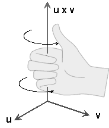

Maths
1. Vectors
Vector mathematics is a fundamental part of game development, used in various aspects such as physics simulations, graphics, and AI. I'll provide a detailed explanation of vector mathematics concepts essential for game development, accompanied by diagrams and equations.
1. Vectors and Their Representation
A vector is a quantity that has both magnitude and direction. In 2D space, a vector \(\mathbf{v}\) can be represented as:
In 3D space, a vector \(\mathbf{v}\) can be represented as:
Here, \(v_x\), \(v_y\), and \(v_z\) are the components of the vector in the x, y, and z directions, respectively.
2. Vector Addition and Subtraction
Vectors can be added and subtracted component-wise. For two vectors \(\mathbf{u}\) and \(\mathbf{v}\):
The addition of vectors:
The subtraction of vectors:
Diagram for Vector Addition and Subtraction
Consider two vectors \(\mathbf{u}\) and \(\mathbf{v}\):

3. Scalar Multiplication
A vector can be multiplied by a scalar (a single number), scaling its magnitude. For a scalar \(k\) and a vector \(\mathbf{v}\):
4. Dot Product
The dot product (or scalar product) of two vectors \(\mathbf{u}\) and \(\mathbf{v}\) is defined as:
The dot product can also be expressed in terms of the magnitudes of the vectors and the cosine of the angle \(\theta\) between them:
5. Cross Product
The cross product (or vector product) of two vectors \(\mathbf{u}\) and \(\mathbf{v}\) in 3D space results in a vector that is perpendicular to both \(\mathbf{u}\) and \(\mathbf{v}\):
Diagram for Cross Product
Consider two vectors \(\mathbf{u}\) and \(\mathbf{v}\):

6. Vector Magnitude (Length)
The magnitude (or length) of a vector \(\mathbf{v}\) is calculated using the Euclidean norm:
7. Unit Vector
A unit vector is a vector with a magnitude of 1. To convert a vector \(\mathbf{v}\) into a unit vector \(\hat{\mathbf{v}}\):
8. Vector Projection
The projection of vector \(\mathbf{v}\) onto vector \(\mathbf{u}\) is given by:
Diagram for Vector Projection
Consider the projection of vector \(\mathbf{v}\) onto \(\mathbf{u}\):

9. Applications in Game Development
Physics Simulations
- Forces and Motion: Vectors represent forces, velocity, and acceleration.
- Collision Detection: Vectors are used to calculate distances and directions between objects.
Graphics
- Transformations: Vectors are used in transformations, such as translation, rotation, and scaling.
- Lighting: Vectors represent light directions and normals for shading calculations.
AI
- Navigation: Vectors are used for pathfinding algorithms to determine directions and distances.
- Steering Behaviors: Vectors represent desired directions and speeds for characters.
Understanding vector mathematics is crucial for implementing these and many other systems in game development. The concepts of vector addition, subtraction, dot product, cross product, and projections form the foundation of many game mechanics and graphical effects.
2. Matrices
Matrix mathematics is essential for various aspects of game development, especially in graphics and physics. Matrices are used to perform transformations such as translation, rotation, scaling, and perspective projection. Here's a detailed explanation of matrix mathematics concepts important for game development, accompanied by diagrams and equations.
1. Matrix Representation
A matrix is a rectangular array of numbers arranged in rows and columns. A common matrix used in game development is a 4x4 matrix, especially for 3D transformations:
2. Matrix Addition and Subtraction
Matrices can be added or subtracted element-wise. For two matrices \(\mathbf{A}\) and \(\mathbf{B}\):
The addition of matrices:
The subtraction of matrices:
3. Scalar Multiplication
A matrix can be multiplied by a scalar (a single number), scaling each element of the matrix. For a scalar \(k\) and a matrix \(\mathbf{A}\):
4. Matrix Multiplication
Matrix multiplication is not element-wise; instead, it involves the dot product of rows and columns. For two matrices \(\mathbf{A}\) and \(\mathbf{B}\):
Diagram for Matrix Multiplication
Consider two matrices \(\mathbf{A}\) and \(\mathbf{B}\):

5. Identity Matrix
The identity matrix is a special matrix that, when multiplied by another matrix, does not change the other matrix. For a 4x4 identity matrix \(\mathbf{I}\):
6. Transformation Matrices
Translation
A translation matrix moves a vector by a certain distance in the x, y, and z directions. For a translation by \((t_x, t_y, t_z)\):
Rotation
Rotation matrices rotate vectors around an axis. For a rotation by an angle \(\theta\) around the z-axis:
Scaling
A scaling matrix scales a vector by factors \(s_x\), \(s_y\), and \(s_z\) in the x, y, and z directions, respectively:
Diagram for Transformations
Consider the transformation of a vector by translation, rotation, and scaling:

7. Homogeneous Coordinates
In computer graphics, homogeneous coordinates are used to represent points in projective space. A 3D point \((x, y, z)\) can be represented in homogeneous coordinates as ((x, y, z,
1)). This allows for the use of 4x4 matrices to perform transformations.
8. Combining Transformations
Transformations can be combined by multiplying their matrices. For a combination of translation, rotation, and scaling:
9. Perspective Projection
A perspective projection matrix projects 3D points onto a 2D plane, simulating the effect of a camera lens. For a perspective projection with a field of view \(fov\), aspect ratio \(a\), near plane \(n\), and far plane \(f\):
Diagram for Perspective Projection
Consider the projection of a 3D point onto a 2D plane:

10. Applications in Game Development
Graphics
- Model Transformations: Transforming models from their local space to world space.
- Camera Transformations: Transforming points from world space to camera space.
- Projection: Projecting 3D points onto the 2D screen.
Physics
- Rigid Body Transformations: Applying translations and rotations to simulate the movement of objects.
AI
- Pathfinding: Transforming points and vectors to navigate through 3D space.
Understanding matrix mathematics is crucial for implementing these and many other systems in game development. Mastering matrix operations enables developers to efficiently perform complex transformations and render 3D scenes accurately.
3. Transformation Pipeline
The transformation pipeline is a critical concept in 3D graphics and game development. It involves transforming 3D objects from their local object space to the 2D screen space for rendering. The transformation pipeline consists of several stages, including model transformation, view transformation, projection transformation, and viewport transformation. Each stage involves applying specific mathematical operations, primarily using matrices. Here's a detailed explanation of each stage with diagrams and equations.
1. Model Transformation
The model transformation (also known as the world transformation) converts object coordinates from local object space to world space. This involves translating, rotating, and scaling the object.
Translation
To translate an object by a vector \(\mathbf{T} = (T_x, T_y, T_z)\), we use the translation matrix:
Rotation
To rotate an object around the x-axis, y-axis, and z-axis by angles \(\theta_x\), \(\theta_y\), and \(\theta_z\) respectively, we use the rotation matrices:
Scaling
To scale an object by factors \(S_x\), \(S_y\), and \(S_z\), we use the scaling matrix:
Diagram of Model Transformation

2. View Transformation
The view transformation (also known as the camera transformation) converts coordinates from world space to camera (view) space. This involves positioning and orienting the camera in the scene.
Camera Transformation Matrix
The camera transformation is typically defined by the camera's position \(\mathbf{C}\), the look-at point \(\mathbf{L}\), and the up vector \(\mathbf{U}\).
-
Compute the forward, right, and up vectors:
\[ \mathbf{F} = \frac{\mathbf{L} - \mathbf{C}}{|\mathbf{L} - \mathbf{C}|} \]\[ \mathbf{R} = \frac{\mathbf{F} \times \mathbf{U}}{|\mathbf{F} \times \mathbf{U}|} \]\[ \mathbf{U}' = \mathbf{R} \times \mathbf{F} \] -
Construct the view matrix:
Diagram of View Transformation

3. Projection Transformation
The projection transformation converts coordinates from camera space to clip space. There are two main types of projection: orthographic and perspective.
Orthographic Projection
For orthographic projection, objects are projected directly onto the screen without perspective distortion.
where \(l, r, b, t, n, f\) are the left, right, bottom, top, near, and far clipping planes, respectively.
Perspective Projection
For perspective projection, objects farther from the camera appear smaller, creating a sense of depth.
Diagram of Projection Transformation

4. Viewport Transformation
The viewport transformation converts coordinates from normalized device coordinates (NDC) to screen space coordinates, which correspond to the actual pixels on the screen.
Viewport Transformation Matrix
Given a viewport defined by the origin \((x, y)\) and dimensions \((width, height)\), the transformation is:
Diagram of Viewport Transformation

5. Full Transformation Pipeline
Combining all the transformations, the full transformation pipeline can be represented as:
where \(\mathbf{P}_{\text{object}}\) is a point in object space, and \(\mathbf{P}_{\text{final}}\) is the corresponding point in screen space.
Diagram of the Full Transformation Pipeline

Conclusion
Understanding the transformation pipeline is crucial for rendering 3D scenes accurately in game development. Each stage of the pipeline—model, view, projection, and viewport transformations—plays a specific role in converting object coordinates from local space to screen space. Mastery of these concepts enables developers to create visually accurate and immersive 3D environments.
4. Quaternions
Quaternions are an essential part of game development, especially for representing and manipulating rotations in 3D space. They offer several advantages over Euler angles and rotation matrices, such as avoiding gimbal lock and providing smooth interpolation. Here's a detailed explanation of quaternions, including their properties, operations, and applications in game development.
1. Quaternion Representation
A quaternion is a four-dimensional complex number that can be used to encode 3D rotations. It is typically represented as:
where \(w\) is the scalar part and \(x, y, z\) are the vector parts. Quaternions are often written in the form:
2. Quaternion Operations
Quaternion Addition
Quaternions can be added component-wise, similar to vectors:
Scalar Multiplication
A quaternion can be multiplied by a scalar, scaling each component:
Quaternion Multiplication
The multiplication of two quaternions \(\mathbf{q}_1\) and \(\mathbf{q}_2\) results in another quaternion. This operation is non-commutative, meaning \(\mathbf{q}_1 \mathbf{q}_2 \neq \mathbf{q}_2 \mathbf{q}_1\). The product \(\mathbf{q}_1 \mathbf{q}_2\) is given by:
Quaternion Conjugate
The conjugate of a quaternion \(\mathbf{q} = \begin{pmatrix} w \\ x \\ y \\ z \end{pmatrix}\) is given by:
Quaternion Norm
The norm (or magnitude) of a quaternion \(\mathbf{q} = \begin{pmatrix} w \\ x \\ y \\ z \end{pmatrix}\) is given by:
Quaternion Inverse
The inverse of a quaternion \(\mathbf{q}\) is given by:
3. Unit Quaternions
Unit quaternions have a norm of 1 and are used to represent rotations. For a quaternion \(\mathbf{q} = \begin{pmatrix} w \\ x \\ y \\ z \end{pmatrix}\) to be a unit quaternion:
4. Rotations Using Quaternions
A rotation by an angle \(\theta\) around a unit vector \(\mathbf{v} = \begin{pmatrix} v_x \\ v_y \\ v_z \end{pmatrix}\) can be represented by a unit quaternion:
Diagram for Quaternion Rotation
Consider a vector \(\mathbf{p} = \begin{pmatrix} p_x \\ p_y \\ p_z \end{pmatrix}\) being rotated by a quaternion \(\mathbf{q}\):

5. Applying Quaternion Rotation
To rotate a vector \(\mathbf{p}\) by a quaternion \(\mathbf{q}\):
- Convert \(\mathbf{p}\) into a pure quaternion: \(\mathbf{p} = \begin{pmatrix} 0 \\ p_x \\ p_y \\ p_z \end{pmatrix}\)
- Compute the rotated vector using quaternion multiplication: \(\mathbf{p}' = \mathbf{q} \mathbf{p} \mathbf{q}^{-1}\)
- Extract the vector part of \(\mathbf{p}'\) for the rotated vector.
6. Spherical Linear Interpolation (SLERP)
SLERP is used for smooth interpolation between two quaternions. For two unit quaternions \(\mathbf{q}_0\) and \(\mathbf{q}_1\) and an interpolation parameter \(t\):
where \(\Omega = \cos^{-1}(\mathbf{q}_0 \cdot \mathbf{q}_1)\).
Diagram for SLERP
Consider interpolating between two quaternions \(\mathbf{q}_0\) and \(\mathbf{q}_1\):

7. Applications in Game Development
Smooth Rotations
Quaternions are used to smoothly rotate objects without experiencing gimbal lock, which can occur with Euler angles.
Camera Controls
Quaternions are used for camera rotations, providing smooth and intuitive control.
Skeletal Animation
Quaternions are used to interpolate between bone rotations in skeletal animations, resulting in smooth animations.
Physics Simulations
Quaternions are used to represent and compute rotations in physics simulations, ensuring accurate and efficient computations.
Conclusion
Quaternions are a powerful tool in game development for representing and manipulating rotations. They provide advantages over other methods, such as avoiding gimbal lock and enabling smooth interpolation. Understanding quaternion operations and their applications is crucial for implementing various systems and mechanics in 3D games.
5. Ray Casting
Raycasting is a fundamental technique in game development used for various purposes, such as collision detection, visibility determination, picking objects in a 3D environment, and more. Here's an in-depth look at the mathematics behind raycasting, complete with diagrams and equations.
1. Basic Concepts
Raycasting involves shooting a ray from a point in a specified direction and determining what objects the ray intersects.
Components of a Ray
A ray is defined by an origin point \(\mathbf{O}\) and a direction vector \(\mathbf{D}\).
Diagram of a Ray

2. Ray Equation
The parametric equation of a ray is given by:
where:
- \(\mathbf{R}(t)\) is the position on the ray at parameter \(t\).
- \(\mathbf{O}\) is the origin of the ray.
- \(\mathbf{D}\) is the direction vector of the ray.
- \(t\) is a scalar parameter.
3. Ray-Plane Intersection
To determine where a ray intersects a plane, we use the plane equation and solve for the parameter \(t\).
Plane Equation
A plane is defined by a point \(\mathbf{P_0}\) on the plane and a normal vector \(\mathbf{N}\). The plane equation is:
Diagram of Ray-Plane Intersection

Intersection Calculation
Substitute the ray equation into the plane equation:
Solve for \(t\):
- If \(\mathbf{D} \cdot \mathbf{N} = 0\), the ray is parallel to the plane and does not intersect it.
4. Ray-Sphere Intersection
To determine where a ray intersects a sphere, we use the sphere equation and solve for the parameter \(t\).
Sphere Equation
A sphere is defined by a center point \(\mathbf{C}\) and a radius \(r\). The sphere equation is:
Diagram of Ray-Sphere Intersection

Intersection Calculation
Substitute the ray equation into the sphere equation:
This results in a quadratic equation:
Solve the quadratic equation for \(t\):
where:
Use the quadratic formula: [ t = \frac{-b \pm \sqrt{b^2 - 4ac}}{2a} ]
- If \(b^2 - 4ac < 0\), there is no intersection.
- If \(b^2 - 4ac = 0\), there is one intersection (the ray is tangent to the sphere).
- If \(b^2 - 4ac > 0\), there are two intersections.
5. Ray-AABB (Axis-Aligned Bounding Box) Intersection
An Axis-Aligned Bounding Box (AABB) is a box aligned with the coordinate axes, used for simple and efficient collision detection.
Diagram of Ray-AABB Intersection

Intersection Calculation
For each pair of parallel planes defining the AABB (x, y, and z planes), compute the intersection points:
- If \(t_{min} > t_{max}\), there is no intersection.
- If \(t_{min} \leq t_{max}\), there is an intersection within the AABB.
Compute \(t\) for each axis:
For the x-axis:
For the y-axis:
For the z-axis:
6. Applications in Game Development
Collision Detection
Raycasting is commonly used for collision detection in games, such as detecting whether a bullet hits a target or determining if a character can move to a new location.
Visibility Determination
Raycasting helps in determining the visibility of objects in a scene, such as whether an enemy is visible to the player or if a light source illuminates a surface.
Picking Objects
In 3D editors and games, raycasting is used to select objects with the mouse. A ray is cast from the camera through the mouse cursor into the scene to determine which object is under the cursor.
Shadow Mapping
Raycasting is used to determine whether a point is in shadow by casting a ray from the point to the light source and checking for intersections with other objects.
Conclusion
Raycasting is a powerful technique in game development for a wide range of applications, from collision detection to visibility determination. Understanding the mathematics behind raycasting, including ray-plane, ray-sphere, and ray-AABB intersections, allows developers to implement efficient and effective raycasting algorithms in their games.
6. Bounding Volume Hierarchies
Used for efficient collision detection and spatial queries.
Diagram: A tree structure representing nested bounding volumes (spheres or boxes) around a complex 3D model.
7. Projection
Projection mathematics is fundamental in game development for rendering 3D scenes onto a 2D screen. The process involves transforming 3D coordinates to 2D coordinates using projection matrices. There are two primary types of projections: orthographic and perspective. Here, we will explain both types, their corresponding projection matrices, and their applications.
1. Orthographic Projection
Orthographic projection maps 3D points directly to 2D points without considering depth. This type of projection is often used in technical and engineering applications, as well as for 2D games that require a top-down or side view.
Orthographic Projection Matrix
The orthographic projection matrix transforms a 3D point \((x, y, z)\) to a 2D point \((x', y')\) based on specified view volume dimensions (left, right, bottom, top, near, far).
where:
- \(l\) = left
- \(r\) = right
- \(b\) = bottom
- \(t\) = top
- \(n\) = near
- \(f\) = far
Diagram for Orthographic Projection
Consider a cube being projected orthographically onto a 2D plane:

2. Perspective Projection
Perspective projection simulates how the human eye perceives the world, where objects farther from the viewer appear smaller. This type of projection is essential for realistic 3D rendering in games.
Perspective Projection Matrix
The perspective projection matrix transforms a 3D point \((x, y, z)\) to a 2D point \((x', y')\) by considering depth. The matrix is defined based on the field of view (fov), aspect ratio (a), near plane (n), and far plane (f).
where:
- \(fov\) = field of view
- \(a\) = aspect ratio
- \(n\) = near plane
- \(f\) = far plane
Diagram for Perspective Projection
Consider a pyramid being projected perspectively onto a 2D plane:

3. View Transformation
Before applying projection, we often need to transform points from world space to camera space using a view matrix. This matrix is constructed using the camera's position, target, and up vector.
View Matrix
Given a camera at position \(\mathbf{C}\), looking at target \(\mathbf{T}\), with an up vector \(\mathbf{U}\):
- Compute the forward vector \(\mathbf{F} = \frac{\mathbf{T} - \mathbf{C}}{\|\mathbf{T} - \mathbf{C}\|}\)
- Compute the right vector \(\mathbf{R} = \frac{\mathbf{U} \times \mathbf{F}}{\|\mathbf{U} \times \mathbf{F}\|}\)
- Compute the up vector \(\mathbf{U}' = \mathbf{F} \times \mathbf{R}\)
The view matrix \(\mathbf{V}\) is then:
4. Model Transformation
To position and orient objects in the world, we use model matrices, which combine translation, rotation, and scaling transformations.
Model Matrix
For an object at position \(\mathbf{P}\), rotated by quaternion \(\mathbf{Q}\), and scaled by \(\mathbf{S}\):
- Translation Matrix:
- Rotation Matrix (from quaternion \(\mathbf{Q}\)):
- Scaling Matrix:
- Combined Model Matrix:
5. Complete Transformation Pipeline
To transform a point from model space to screen space, we apply the model, view, and projection matrices sequentially:
Diagram for Complete Transformation Pipeline
Consider the complete transformation of a 3D point through model, view, and projection transformations:

6. Perspective Divide
After applying the projection matrix, we perform the perspective divide to convert from homogeneous coordinates to 2D screen coordinates:
7. Normalized Device Coordinates (NDC)
The result of the perspective divide is in normalized device coordinates (NDC), where the coordinates range from -1 to 1. These coordinates are then mapped to screen space based on the screen resolution.
Applications in Game Development
- Rendering 3D Scenes: Using projection matrices to render 3D objects onto a 2D screen.
- Camera Controls: Manipulating view matrices to simulate camera movement and orientation.
- Object Transformations: Applying model matrices to position, rotate, and scale objects in the scene.
- Frustum Culling: Using the projection matrix to determine which objects are within the camera's view and should be rendered.
Conclusion
Understanding projection mathematics is crucial for game development, as it enables the accurate rendering of 3D scenes onto a 2D screen. Mastering orthographic and perspective projections, along with the complete transformation pipeline, allows developers to create immersive and visually compelling 3D games.
8. Barycentric Coordinates
Used for interpolation within triangles (e.g., for texture mapping).
For a point P inside triangle ABC: P = αA + βB + γC, where α + β + γ = 1
Diagram: A triangle with a point inside, showing how its position is determined by the barycentric coordinates.
Curves
Curves are essential in game development for a variety of applications such as animations, camera paths, object trajectories, and more. Here, we will focus on two primary types of curves used in game development: Bézier curves and B-spline curves. We will explain their mathematics, provide equations, and illustrate with diagrams.
1. Bézier Curves
Bézier curves are parametric curves frequently used in computer graphics and game development due to their simplicity and ease of use. They are defined by a set of control points.
Linear Bézier Curve (Degree 1)
A linear Bézier curve is the simplest type, defined by two control points, \(\mathbf{P}_0\) and \(\mathbf{P}_1\). The curve is a straight line between these points.
The equation for a linear Bézier curve is:
Diagram of Linear Bézier Curve

Quadratic Bézier Curve (Degree 2)
A quadratic Bézier curve is defined by three control points, \(\mathbf{P}_0\), \(\mathbf{P}_1\), and \(\mathbf{P}_2\). The equation is:
Diagram of Quadratic Bézier Curve

Cubic Bézier Curve (Degree 3)
A cubic Bézier curve is defined by four control points, \(\mathbf{P}_0\), \(\mathbf{P}_1\), \(\mathbf{P}_2\), and \(\mathbf{P}_3\). The equation is:
Diagram of Cubic Bézier Curve

2. B-spline Curves
B-spline curves are a generalization of Bézier curves, providing more flexibility and local control over the shape of the curve. B-splines are defined by a set of control points and a degree \(d\).
Basis Functions
The B-spline basis functions \(N_{i,d}(t)\) are defined recursively:
- Degree 0 Basis Functions:
- Degree d Basis Functions:
where \(u_i\) are the knot vector values.
B-spline Curve Equation
A B-spline curve is defined as:
where \(\mathbf{P}_i\) are the control points, \(N_{i,d}(t)\) are the basis functions, and \(n\) is the number of control points minus one.
Diagram of B-spline Curve
Consider a cubic B-spline curve with several control points:

3. Practical Applications in Game Development
Animations
Curves are used to interpolate the positions and orientations of objects over time, creating smooth animations. For example, a character's movement along a path can be defined using a Bézier or B-spline curve.
Camera Paths
Curves define the trajectory of the camera, ensuring smooth transitions and movements in the game world. A B-spline curve is particularly useful due to its local control properties.
Object Trajectories
Curves define the path of moving objects, such as projectiles or vehicles, providing smooth and predictable motion.
Conclusion
Understanding the mathematics of curves is crucial for various aspects of game development, including animation, camera movement, and object trajectories. By mastering Bézier and B-spline curves, developers can create smooth and dynamic motions, enhancing the overall gaming experience.
10. Normal Mapping
Normal mapping is a technique used in game development to add detailed surface texture and lighting to 3D models without increasing their geometric complexity. This technique uses normal maps to simulate small surface details like bumps and dents. Here’s a detailed explanation of normal mapping, including the necessary mathematics, operations, and applications in game development.
1. What is a Normal Map?
A normal map is a texture that stores normal vectors for each pixel, altering the way light interacts with the surface. Unlike a bump map, which only stores height information, a normal map stores directional information using RGB channels.
2. The Concept of Normal Mapping
The normal map modifies the surface normals of a 3D model, affecting the lighting calculations. This creates the illusion of complex surface details on a simple model.
Diagram of Normal Mapping
Consider a flat surface with a normal map applied:

3. Tangent Space
Normal maps are often defined in tangent space, which is a coordinate system local to each point on the surface of a 3D model. Tangent space is defined by three vectors:
- Tangent (\(\mathbf{T}\)): Points in the direction of the texture’s U coordinate.
- Bitangent (\(\mathbf{B}\)): Points in the direction of the texture’s V coordinate.
- Normal (\(\mathbf{N}\)): Points outward from the surface.
4. Creating the Tangent Space Basis
To transform normal vectors from tangent space to world space, we need to construct a tangent space basis matrix:
Calculating Tangent and Bitangent
Given texture coordinates \((u, v)\) and vertex positions \((x, y, z)\), the tangent (\(\mathbf{T}\)) and bitangent (\(\mathbf{B}\)) vectors are computed using partial derivatives:
-
Compute the vectors \(\mathbf{\Delta P_1}\) and \(\mathbf{\Delta P_2}\) between vertices:
\[ \mathbf{\Delta P_1} = \mathbf{P_2} - \mathbf{P_1} \]\[ \mathbf{\Delta P_2} = \mathbf{P_3} - \mathbf{P_1} \] -
Compute the difference in texture coordinates:
\[ \Delta u_1 = u_2 - u_1, \quad \Delta v_1 = v_2 - v_1 \]\[ \Delta u_2 = u_3 - u_1, \quad \Delta v_2 = v_3 - v_1 \] -
Use these differences to solve for the tangent and bitangent:
\[ \mathbf{T} = \frac{1}{\Delta u_1 \Delta v_2 - \Delta u_2 \Delta v_1} (\Delta v_2 \mathbf{\Delta P_1} - \Delta v_1 \mathbf{\Delta P_2}) \]\[ \mathbf{B} = \frac{1}{\Delta u_1 \Delta v_2 - \Delta u_2 \Delta v_1} (\Delta u_1 \mathbf{\Delta P_2} - \Delta u_2 \mathbf{\Delta P_1}) \]
5. Normal Map to World Space
To transform the normal vector \(\mathbf{N_t}\) from the normal map (in tangent space) to world space, we use the tangent space basis matrix:
Diagram of Tangent Space
Consider the transformation of a normal vector from tangent space to world space:

6. Lighting Calculations
With the normal in world space, standard lighting calculations (e.g., Lambertian reflection) are performed:
where:
- \(I\) is the intensity of the light.
- \(k_d\) is the diffuse coefficient.
- \(\mathbf{L}\) is the light direction.
- \(\mathbf{C_l}\) is the light color.
7. Parallax Mapping
Parallax mapping is an extension of normal mapping that adds depth to textures by offsetting texture coordinates based on the view direction.
Height Map
A height map is used to store the height information of the surface. The height value is used to compute the parallax offset.
Parallax Offset Calculation
The parallax offset is computed using the view direction (\(\mathbf{V}\)) and the height value (\(h\)):
The texture coordinates are then adjusted by this offset to create the illusion of depth.
Diagram of Parallax Mapping
Consider the effect of parallax mapping on a surface:

8. Implementing Normal Mapping in Shaders
Normal mapping is typically implemented in shaders. The process involves: 1. Sampling the normal map texture. 2. Transforming the sampled normal from tangent space to world space. 3. Performing lighting calculations using the transformed normal.
Vertex Shader
The vertex shader computes the tangent space basis vectors and passes them to the fragment shader.
#version 330 core
layout(location = 0) in vec3 position;
layout(location = 1) in vec3 normal;
layout(location = 2) in vec2 texCoords;
layout(location = 3) in vec3 tangent;
out vec2 TexCoords;
out mat3 TBN;
uniform mat4 model;
uniform mat4 view;
uniform mat4 projection;
void main()
{
gl_Position = projection * view * model * vec4(position, 1.0);
vec3 T = normalize(mat3(model) * tangent);
vec3 N = normalize(mat3(model) * normal);
vec3 B = cross(N, T);
TBN = mat3(T, B, N);
TexCoords = texCoords;
}
Fragment Shader
The fragment shader performs the normal mapping and lighting calculations.
#version 330 core
in vec2 TexCoords;
in mat3 TBN;
out vec4 FragColor;
uniform sampler2D normalMap;
uniform vec3 lightDir;
uniform vec3 viewDir;
uniform vec3 lightColor;
uniform vec3 objectColor;
void main()
{
vec3 normal = texture(normalMap, TexCoords).rgb;
normal = normalize(normal * 2.0 - 1.0);
normal = normalize(TBN * normal);
vec3 lightDir = normalize(lightDir);
float diff = max(dot(normal, lightDir), 0.0);
vec3 diffuse = diff * lightColor * objectColor;
FragColor = vec4(diffuse, 1.0);
}
Applications in Game Development
- Detail Enhancement: Normal mapping adds fine details to models without increasing polygon count, enhancing visual fidelity.
- Performance Optimization: By simulating surface details with textures, normal mapping reduces the need for complex geometry, improving rendering performance.
- Realistic Lighting: Normal maps enhance the interaction between light and surface, creating more realistic and dynamic lighting effects.
Conclusion
Normal mapping is a crucial technique in game development for creating detailed and realistic surfaces. By understanding the mathematics behind normal maps, tangent space transformations, and lighting calculations, developers can implement efficient and visually compelling normal mapping in their games.